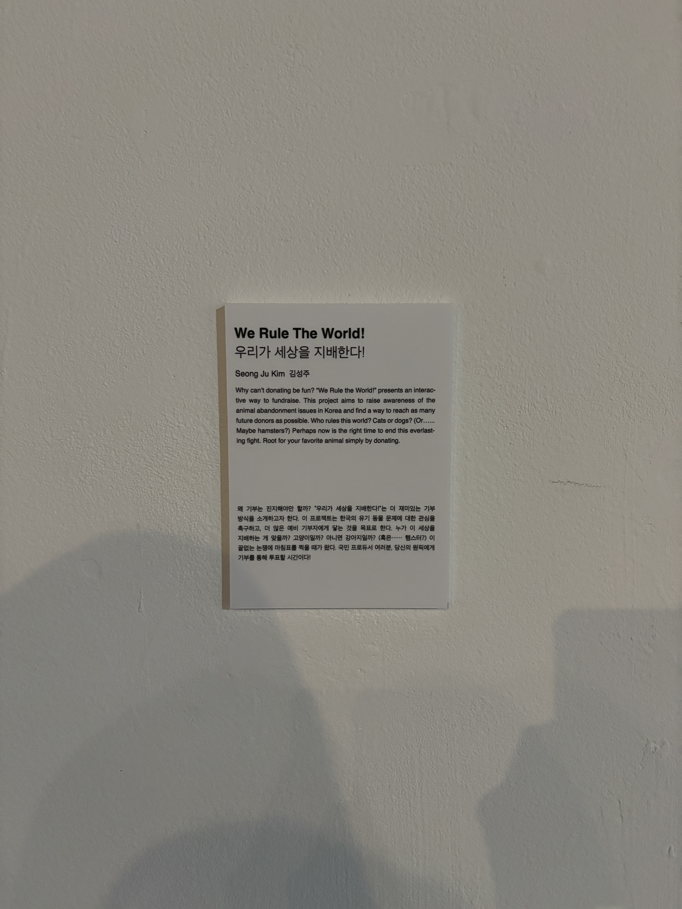
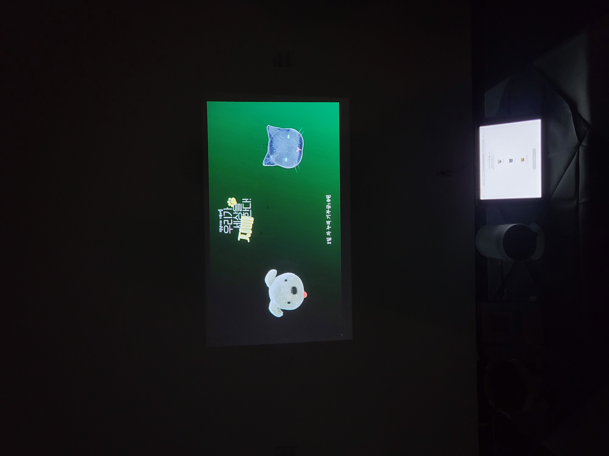

We Rule the World!
A gamified platform for young donors that makes donating fun and accessible to help underfunded animal shelters in South Korea.
✦ Exhibited at VIVIID: 2023 IID Senior Exhibition, Seoul — Nov 3–11
"What if donating felt less like charity and more like cheering for your favorite team?"
Challenges
Young donors exist in large numbers, but most donation platforms were never designed for how they engage online.
Private animal shelters in South Korea spend around $140,000 a year on average, with 52% funded by donations alone. Most have little visibility or tools to consistently reach donors.
The gap is not lack of awareness. It is lack of access to the right audience. Young donors, the most socially connected and peer-influenced demographic, are largely untapped because existing donation formats were never designed for them. A survey of 70 young donors confirmed this: 85.7% struggle to find causes to support, and nearly half are deterred by heavy emotional appeals.
If donating could be redesigned to fit how young people already engage online, underfunded shelters could reach an audience that traditional campaigns never could.
Research
What young donors actually told us.
70 young donors were surveyed. 91% prefer online giving. 69% prefer one-time donations. 54% say under $3 feels manageable. Empathy and peer influence ranked as the top two motivators for participation. The research pointed clearly toward a social, low-cost, low-commitment format.

The Idea
Turn the donation into a vote for your team.
We Rule the World turns donating into a team competition. Donors pick a mascot, Team Gobong the Dog, Team Catskers the Cat, or Team Hammy the Hamster, and cast their vote with a 3,000 KRW donation, roughly the price of an iced Americano.
A live leaderboard tracks the competition, and cheering messages appear on a real-time exhibition screen. The experience runs online and offline together.

Testing
Team-based competition beat individual rewards by a clear margin.
Two concepts were tested against each other. The team-based competition model scored 1.5x higher on willingness to share compared to an individual reward model, confirming that social dynamics drive participation more than personal incentives alone.


Character Design
Three mascots were designed to shift the emotional ask from sympathy to team pride.
Three mascots were designed to represent animals commonly found in shelters. The goal was to shift the emotional register from guilt to enthusiasm. Donors were not asked to help an animal in need. They were asked to pick a team.


Impact
$250 raised in 9 days from 164 participants, most of whom came to compete and ended up donating.
Donations went directly to a local shelter run by an elderly owner with no digital presence, the kind of place that would never surface through conventional campaigns. The campaign reached people who had no prior intention to donate. They played, and the shelters benefited.
Reflections
Challenges
- Reaching young donors through a format they would actually engage with, not just scroll past
- Designing a donation experience with no guilt and no heavy emotional appeals
- Running a live campaign during a physical exhibition with no prior platform or audience
Accomplishments
- $250 raised in 9 days with no existing donor base and no paid promotion
- 164 participants who chose to play, not donate, and still moved the needle
- Donations reached a shelter that would never have appeared in a conventional campaign
Learnings
- Framing matters more than ask size. The same 3,000 KRW lands differently as a vote than as a donation
- Team dynamics lower the emotional barrier to action in ways individual incentives cannot
- The competition format created organic sharing that no call-to-action could have driven
What's Next
The campaign proved the model works. The next step is running it as a recurring digital-first event that does not depend on a physical space.
The exhibition format worked as a proof of concept, but the model is more powerful when it runs continuously. The next step is partnering directly with shelters to run the campaign as a recurring, digital-first event that does not depend on a physical space to function.
The goal is to establish We Rule the World as an annual campaign with a growing roster of shelters, new mascots each season, and a social sharing layer that lets the competition spread beyond whoever happens to be in the room.
"164 people voted not because they wanted to donate, but because they wanted their team to win."